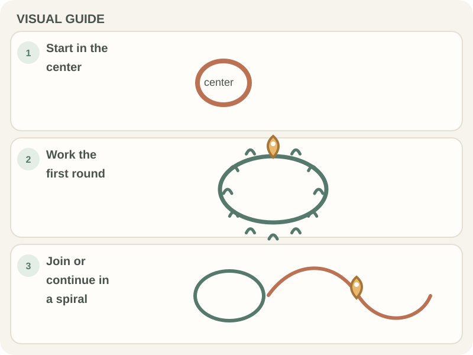

Stitches & Techniques · Beginner guide
How to Work in the Round in Crochet
Crochet in the round builds a circle or tube by working around a center, either in joined rounds or a continuous spiral.

Short answer: Crochet in the round builds a circle or tube by working around a center, either in joined rounds or a continuous spiral.
A round can begin with a chain ring or adjustable ring, depending on the pattern. Joined rounds and spirals look and behave differently, so follow the method your instructions specify.
Before you begin
Gather the listed yarn and hook, a stitch marker, and scissors. Place a marker in the first stitch of each round when working in a spiral.
Step-by-step instructions
- Make the center ring or starting chain exactly as the pattern directs.

Real crochet photograph by Miriam Alonso via Pexels. - Work the first round into the ring or chain space, placing the number of stitches listed.
- For joined rounds, join where instructed; for a spiral, continue into the next stitch without joining.
- Move the marker to the first stitch of each new spiral round and follow the pattern’s increase count.

How to check your work
Lay the piece flat. A circle should remain reasonably flat as instructed; a tube should have sides rather than ruffling. Count stitches or increases at the end of each round.
Common beginner problems
- The circle cups: There may be too few increases for the stitch, yarn, or tension. Check the pattern count before changing hook size.
- The edge ripples: There may be too many stitches or increases. Count the round and compare it with the instructions.
- You lose the start of a spiral: Place a removable marker in the first stitch and move it each round.
Joined rounds and spirals
A joined round usually ends with a slip-stitch join and may show a seam. A spiral avoids that join but needs a marker to track the start. Do not switch methods mid-project unless the pattern tells you to.
Frequently asked questions
Do I join every round?
Only if the pattern says to. Spiral patterns continue without a joining slip stitch.
Why is my circle curling?
Check that you have the stated number of increases and that your tension is not unusually tight.
What does the stitch marker track?
In a spiral, it marks the first stitch of each round so you can count and find the start.